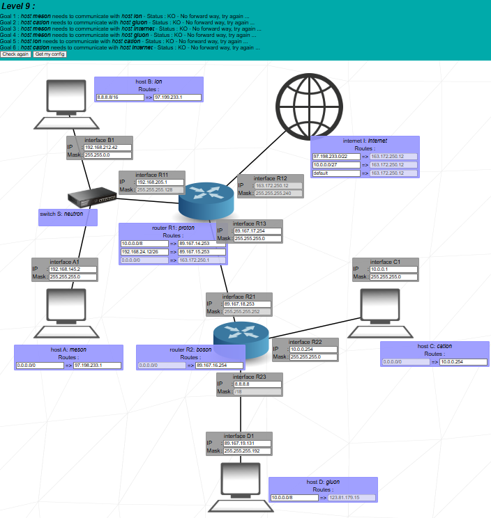
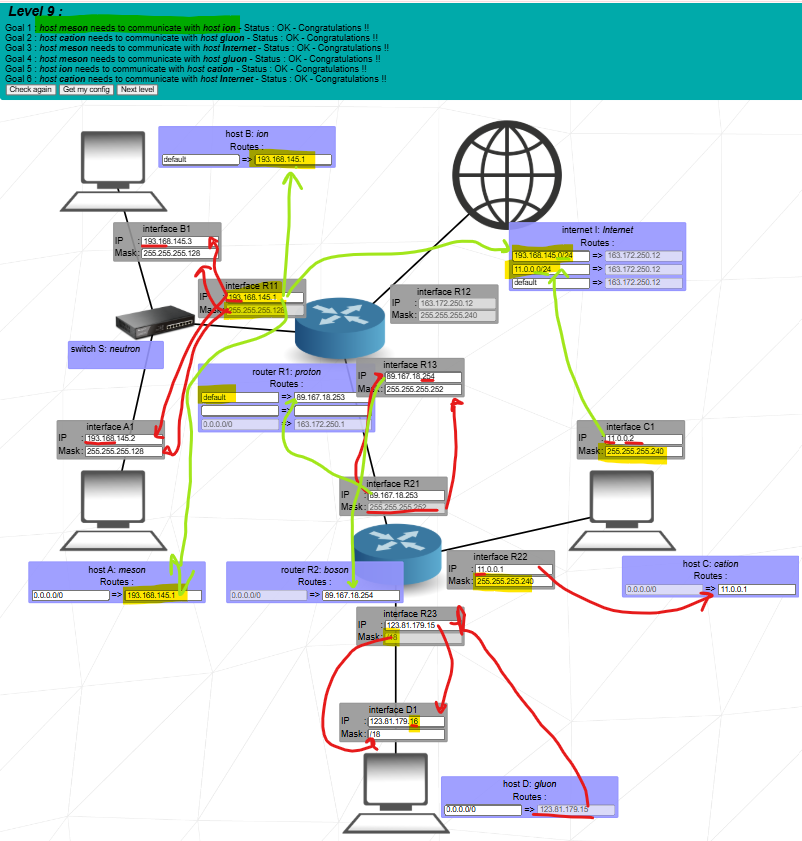

Goal: build three LANs behind two routers, connect them with a /30 backbone, and give
hosts A, B, C, D both internal connectivity and Internet access.


Level 9 – A and B behind router R1, C and D behind router R2, with Internet and a /30 link between routers.
1. Scenario and big picture
Hosts A and B share one LAN behind router R1 (proton). Host C and host D are on two
different LANs behind router R2 (boson). R1 connects both to the Internet and to R2 via
a point-to-point /30 link. Requirements:
So replies to 193.168.145.x or 11.0.0.x go to R1, which then routes them either
locally (A/B LAN) or via R2.
5. Flow summaries and how the logs match
A ↔ B on the same LAN local
A -> B (193.168.145.3)
on A : packet accepted
on A : send to A1
on switch S: pass to all connections
on R1: packet not for me
on B : packet accepted
on B : destination IP reached
A and B are in 193.168.145.0/24, so traffic stays on the switch. R1 sees the frame
but the IP doesn’t match its own, so it prints “packet not for me”.
C ↔ D via R2 R2 routing
C -> D (123.81.179.16)
C: destination not in 11.0.0.0/28
→ route match 0.0.0.0/0
→ send to gateway 11.0.0.1 (R22)
R2: send to R23
D: destination IP reached
D -> C (11.0.0.2)
D: destination not in 123.81.179.0/26
→ route match 0.0.0.0/0
→ send to gateway 123.81.179.15 (R23)
R2: send to R22
C: destination IP reached
R2 routes between its two LANs: the /28 of C and the /26 of D.
A/B ↔ C/D across backbone R1–R2
A -> D (123.81.179.16)
A: destination not in 193.168.145.0/24
→ route match default
→ send to gateway 193.168.145.1 (R11)
R1: destination does not match any interface
→ route match default
→ send to gateway 89.167.18.253 (R21)
R2: send to R23
D: destination IP reached
B -> C (11.0.0.2)
B: uses default => 193.168.145.1
R1: uses default => 89.167.18.253
R2: send to R22
C: destination IP reached
The pattern: host → local router → R1 → R2 → destination LAN.
A and C ↔ Internet Internet
A -> I (163.172.250.1)
A: destination not in 193.168.145.0/24
→ default => 193.168.145.1 (R11)
R1: route match 0.0.0.0/0
→ send to gateway 163.172.250.1 (via R12)
I: destination IP reached
C -> I (163.172.250.1)
C: destination not in 11.0.0.0/28
→ default => 11.0.0.1 (R22)
R2: route match 0.0.0.0/0
→ send to 89.167.18.254 (R13, R1)
R1: route match 0.0.0.0/0
→ send to 163.172.250.1
I: destination IP reached
Replies from Internet to A use the 193.168.145.0/24 route back to R1; replies to C
use the 11.0.0.0/24 route back to R1 and then R2.
6. How to explain Level 9 in the evaluation
Oral summary exam
“In Level 9 I built three LANs: A/B in 193.168.145.0/24 behind R11,
C in 11.0.0.0/28 behind R22, and D in 123.81.179.0/26
behind R23. Each host has a default route pointing to its local router.
Routers R1 and R2 are linked by a /30 backbone 89.167.18.252/30.
R2 has a default route to R1, so all traffic from C and D to other networks goes
through that /30. R1 knows its local 193.168.145.0/24 and uses a “customer default”
via R2 for the private networks behind R2, plus a 0.0.0.0/0 default via
163.172.250.1 toward the Internet. The Internet router has routes for
193.168.145.0/24 and 11.0.0.0/24 back to R1.
As a result, A and B communicate locally in their /24, C and D communicate through
R2, A/B reach C/D through the R1–R2 backbone, and both A and C have working
Internet access with correct return paths.”
three LANs/24, /28, /26/30 backbonedefault gatewaysR2 default to R1Internet return routes